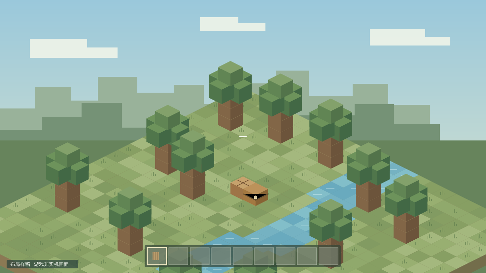

知夏的方块日记林知夏 · 虚拟主播
今天的小目标
知夏
1920 × 1080 · 16:9设计画布
新横屏或方形人物视频需另行制作与动态验收；这里展示旧图取景效果。
游戏仍铺满横屏准星、快捷栏与顶部原生状态条留出保护范围。
留言支持左右切换连续评论向上滚动；留言与礼物一起换边，人物保持右下角。
圆形或横窗可切换圆形重表情，横窗留构图空间；都浮在游戏右下角。
结构依据：blivechat、Bilibili Live Chat 的公开文档。本站样式为本项目原创；当前不连接 B 站，不收取礼物，不播放声音。